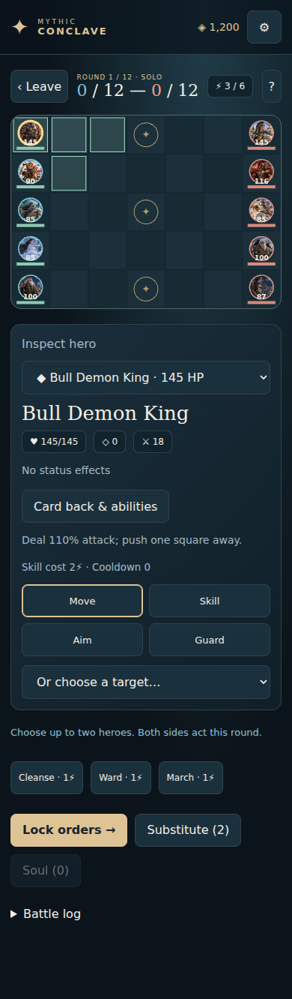

Legends meet on one battlefield.
Build a formation of legendary heroes, read your opponent, issue hidden orders and win through timing, positioning and synergy.

Strategy before spectacle.
32 Legendary Heroes
Heroes inspired by classical stories and mythology, each with distinct skills, passives and battlefield roles.
Formation & Hidden Orders
Deploy five heroes with three in reserve, then choose your actions while your opponent plans at the same time.
Solo & Multiplayer
Battle AI opponents, challenge nearby players on compatible devices, or use Apple Game Center for online duels.
Faction & Class Synergy
Mix heroes freely or build around faction and class bonuses to create different tactical identities.
Card Progression
Earn Coins through play, open card packs and combine duplicates to strengthen your collection.
Made for iPhone & iPad
Responsive battlefield layouts, English and Simplified Chinese, optional effects and haptics.
About purchases
MYTHIC CONCLAVE may offer optional Apple In‑App Purchases for virtual Coins. Coins are used inside the game for card packs. Payments are processed by Apple through StoreKit. No third-party advertising is used.
Online play requires an internet connection and Game Center. Nearby multiplayer requires compatible devices and Local Network permission.